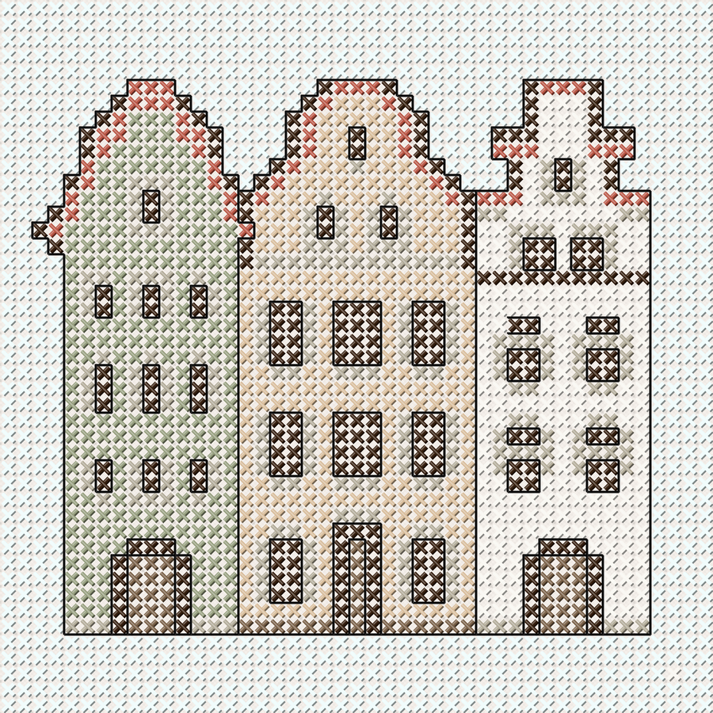

No. 01
The Three Brothers
Riga, Latvia

A unique complex of medieval houses dating from the 15th and 16th centuries — the oldest residential buildings in Riga.
1,182
Stitches
8
Colours
Medium
Difficulty
14-count Aida fabric
DMC stranded cotton
Tapestry needle
Pattern sheet